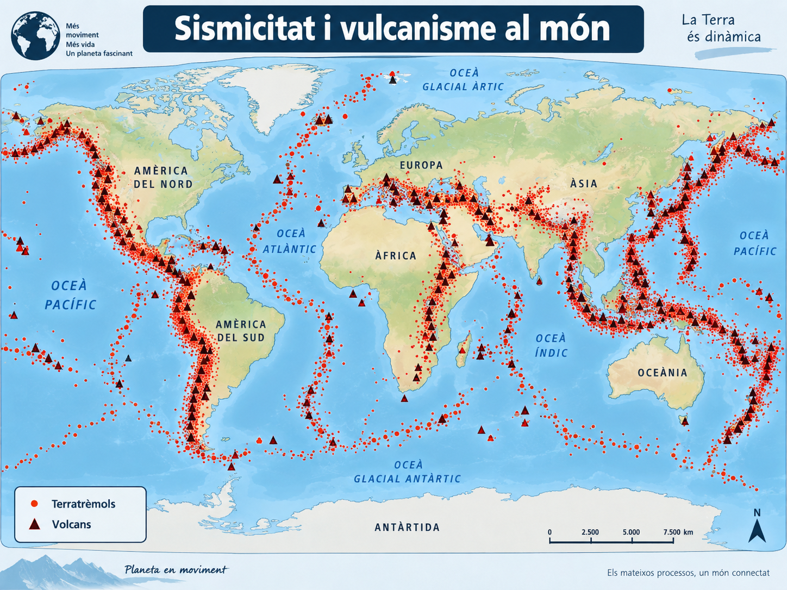
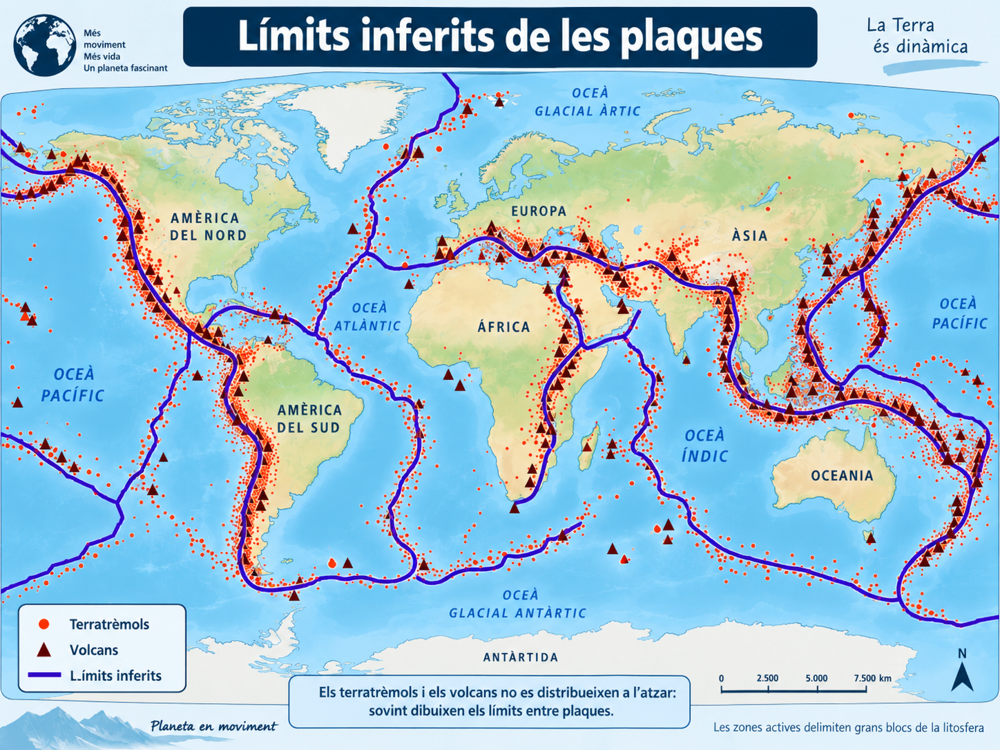
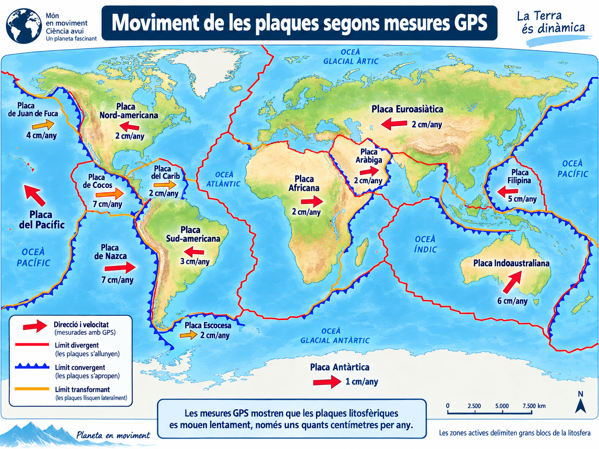
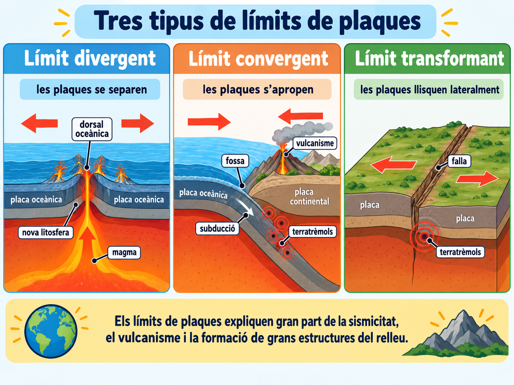

Una Terra fragmentada¶
De patrons a la superfície a un model de plaques en moviment¶

1 · Un planeta amb zones molt actives¶
A la sessió anterior vàrem utilitzar els terratrèmols per investigar l'interior de la Terra.
Ara els mirarem des d'un altre punt de vista: on es produeixen.
Observau el mapa. Els punts representen terratrèmols i els triangles, volcans.
Com es distribueixen els terratrèmols i els volcans a escala mundial?
1.1 · Un patró necessita una explicació¶
Fixau-vos en algunes zones especialment actives:
- el contorn de gran part de l'oceà Pacífic;
- una franja que recorre el centre de l'oceà Atlàntic;
- la regió Mediterrània i asiàtica;
- la costa occidental d'Amèrica.
Si terratrèmols i volcans es concentren repetidament en moltes de les mateixes zones, quina explicació és més raonable?
2 · Què delimiten aquestes franges?¶
Si seguim moltes de les zones on es concentra l'activitat, podem dibuixar límits que separen grans blocs de la part externa de la Terra.

Quina hipòtesi és compatible amb aquest patró?
Aquests grans blocs rígids s'anomenen plaques litosfèriques.
2.1 · Què és exactament una placa?¶
Una placa litosfèrica és un fragment de litosfera.
Litosfera¶
És la part externa rígida de la Terra.
Inclou l'escorça i la part més superficial del mantell.
Per sota¶
Els materials del mantell continuen essent majoritàriament sòlids, però a escala geològica es poden deformar molt lentament.
Quina afirmació és correcta?
3 · Però... es mouen?¶
La forma dels límits ens indica que la litosfera està fragmentada. Però encara falta una pregunta:
aquests blocs estan quiets?
Avui podem mesurar moviments de la superfície terrestre amb sistemes de posicionament per satèl·lit, com el GPS, repetint mesures durant anys.

Quina conclusió podem extreure de mesures repetides que mostren desplaçaments de pocs centímetres cada any?
4 · Tres maneres de trobar-se¶
Si les plaques es mouen, el que passa als seus límits depèn del moviment relatiu entre elles.

4.1 · El moviment deixa una empremta¶
En un límit convergent, una placa oceànica pot enfonsar-se sota una altra placa. Aquest procés s'anomena subducció.
Sovint hi apareixen:
- una fossa oceànica;
- nombrosos terratrèmols;
- i, en moltes zones de subducció, vulcanisme.
Una regió presenta una fossa oceànica profunda, molts terratrèmols i una cadena de volcans. Quin límit és més compatible amb aquestes dades?
5 · Què fa moure les plaques?¶
La Terra conserva molta energia tèrmica interna. Aquesta energia i la gravetat mantenen una dinàmica lenta a l'interior del planeta.
Els materials del mantell són majoritàriament sòlids, però durant milions d'anys poden deformar-se i circular molt lentament. Aquesta circulació forma part de la convecció del mantell.
El moviment de les plaques no depèn d'una única força. Hi intervenen, entre altres processos:
Mantell en moviment lent¶
La transferència de calor està associada a moviments molt lents dels materials del mantell.
Plaques que s'enfonsen¶
A les zones de subducció, la litosfera oceànica freda i densa tendeix a enfonsar-se i pot exercir una forta tracció sobre la placa.
Dorsals oceàniques¶
La topografia elevada de les dorsals també contribueix al moviment per efecte de la gravetat.
Com pot participar el mantell en aquesta dinàmica si és majoritàriament sòlid?
6 · Un model que connecta moltes observacions¶
OBSERVAM¶
Terratrèmols, volcans, dorsals, fosses i serralades formen patrons a escala mundial.
INFERIM¶
La litosfera està fragmentada en plaques que es mouen unes respecte de les altres.
EXPLICAM¶
La interacció entre les plaques explica bona part de l'activitat geològica de la superfície terrestre.
QUEDA'T AMB AIXÒ
La tectònica de plaques no és només un mapa de peces. És un model explicatiu que relaciona el moviment de la litosfera amb la distribució de terratrèmols, volcans i grans estructures del relleu.
A la pròxima activitat haureu d'utilitzar aquests patrons per interpretar dades geològiques reals o simulades i inferir què passa als límits entre plaques.
Tiquet de sortida · Al quadern¶
AL QUADERN · 5 MINUTS
Respon de manera breu, amb frases completes. No cal copiar els enunciats sencers.
-
Del patró a la inferència. Per què la distribució mundial dels terratrèmols i volcans ens fa pensar que la litosfera està fragmentada?
-
Defineix sense confondre. Explica amb les teves paraules què és una placa litosfèrica i per què litosfera i escorça no són sinònims.
-
Interpreta una zona. Hi ha una fossa oceànica, una cadena de volcans i nombrosos terratrèmols. Quin tipus de límit hi esperaries? Justifica la resposta.
-
Mantell sòlid i moviment. Si el mantell és majoritàriament sòlid, com pot participar en la dinàmica que permet el moviment de les plaques?